The first time you open Open Whisper, a setup window called Getting started opens. It asks for what dictation needs, lets you keep or change the shortcut, and ends with a real dictation.
The welcome screen
The window opens on 100% on your Mac (on Windows, 100% on your PC), with one line per step:
Mac
- Microphone: to hear you, only while you dictate.
- Paste: so the text lands where your cursor is.
- Shortcut: the only setting, and it comes ready.
- Test: your first dictation, for real.
Windows
- Microphone: to hear you, only while you dictate.
- Shortcut: the only setting, and it comes ready.
- Test: your first dictation, for real.
There is no Paste step: Windows needs no permission for Open Whisper to paste. The screen also says where the icon is: in the notification area, next to the clock, or behind ^ (see Where the icon lives).
Press Get started. The steps are named along the top of the window: you can pick any of them at any time, with the mouse or the arrow keys.
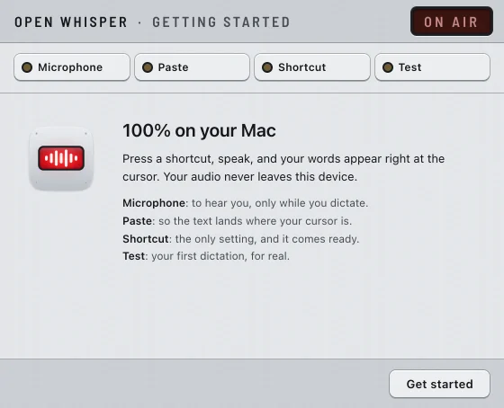
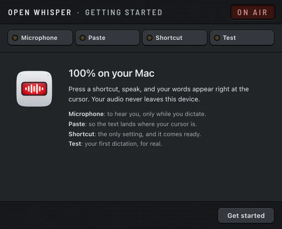
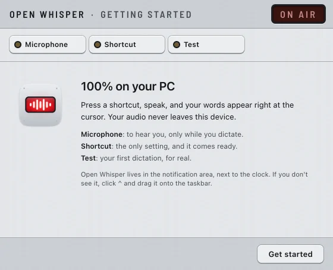
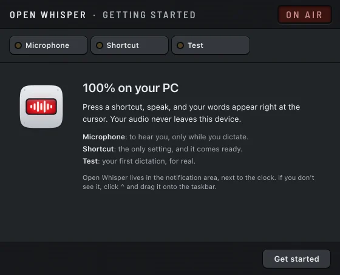
Microphone
This is the one permission dictation cannot work without. The window says when the microphone is on (only while you dictate, never in the background), where transcription happens (on this computer, with no internet) and what is kept afterwards (nothing: the audio is discarded, never saved to disk).
Mac
- Press Allow microphone.
- macOS asks whether Open Whisper may use the microphone. Click Allow.
- The window says Microphone ready. and moves to the next step.
Windows
Windows does not ask: its privacy settings decide whether apps may use the microphone.
- Press Check the microphone.
- If nothing blocks it, the window says Microphone ready. and moves to the next step.
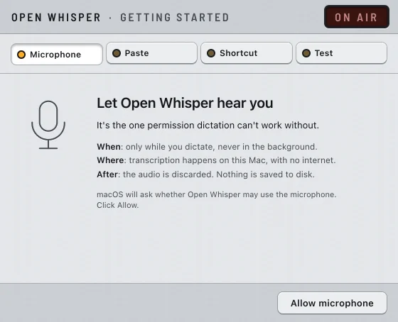
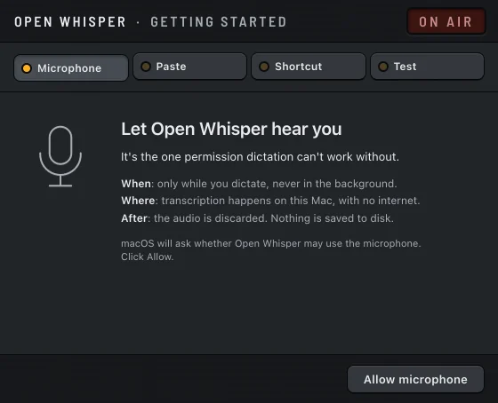
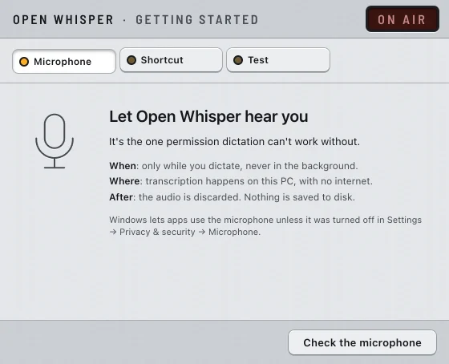
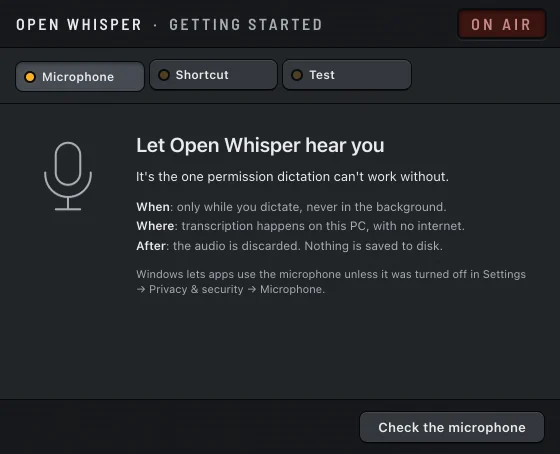
Paste (Mac only)
With the Accessibility permission, Open Whisper pastes the text for you. The window says what it does (sends ⌘V to the app you are in), what it does not (it never reads your screen or what you type) and what happens without it (the text goes to the clipboard and you paste it with ⌘V).
- Press Enable auto-paste.
- macOS offers to open System Settings. There, under Accessibility, switch Open Whisper on.
- Come back to the window. When it sees the permission, it says Auto-paste ready. and moves on.
You can also press Skip — I'll paste manually. Setup goes on, and every dictation waits on the clipboard for you to paste with ⌘V. You can turn auto-paste on later: see Where the text lands.
On Windows this step does not exist.
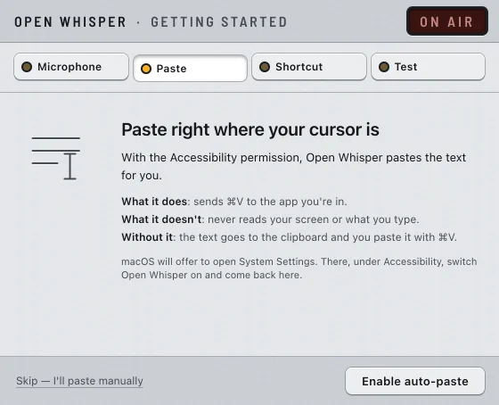
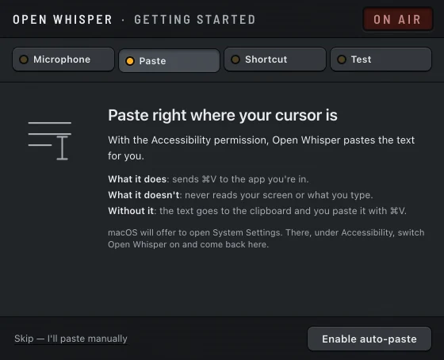
Shortcut
The shortcut comes ready: ⇧⌘Space on the Mac, CtrlShiftSpace on Windows. It is the only setup Open Whisper needs.
- Keep the shortcut shown, or click its key and press the new combination. Esc keeps the current one.
- Pick the mode. Hold to Talk records while you hold the keys and transcribes when you let go. Toggle: press once to start and again to stop.
- Press Continue.
Both choices are saved the moment you make them. A shortcut needs a modifier key; the rules, and the combinations the system keeps for itself, are in Settings. The modes are explained in Dictate.
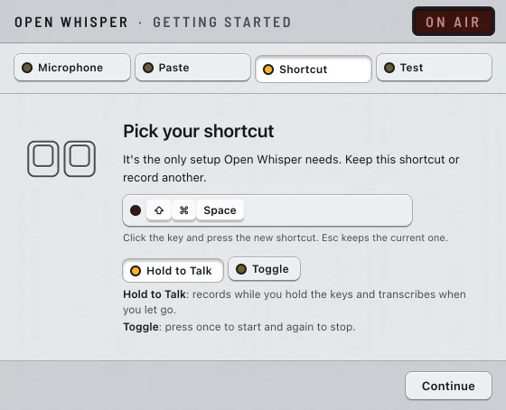
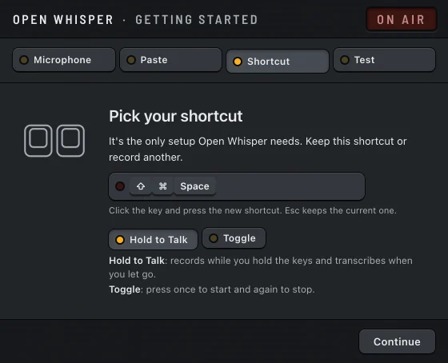

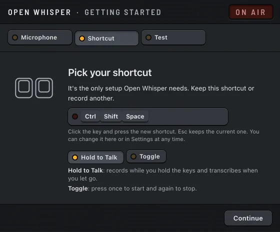
Test
The last step is a real dictation, pasted into the window's test field the same way it is pasted into any app.
- In Hold to Talk, hold the shortcut, say a sentence and let go. In Toggle, press the shortcut, say a sentence and press it again.
- Watch the text arrive in the field. The status line under it says what happened:
| The window says | What happened |
|---|---|
| On air. Go ahead. | It is recording. |
| Transcribing… | You stopped; the text is on its way. |
| It's here. In any app, the text goes wherever your cursor is. | The text landed in the field. |
| The text was pasted where the cursor was, outside this field. Click the field and try again. | The cursor was somewhere else when the text arrived. |
| No speech was heard. Try again, closer to the microphone. | The recording had no speech in it, so nothing was pasted. |
| Cancelled with Esc. Nothing was transcribed. | You pressed Esc while it was recording. |
| Without microphone access the test can't record. Turn it on in the Microphone step. | The microphone permission is missing. |
When the text could not be pasted, it waits on the clipboard and the window says so:
Mac
- The text is on the clipboard. Paste it here with ⌘V.
- Auto-paste is off, so the text went to the clipboard. Paste it here with ⌘V. You skipped the Paste step or did not give the permission.
Windows
- The text is on the clipboard. Paste it here with Ctrl+V.
The note at the bottom of the window says whether Esc cancels with the shortcut and mode you chose. With Hold to Talk and CtrlShiftSpace it says While you hold this shortcut, Esc doesn't cancel: with these keys it belongs to Windows. In Toggle mode, Esc cancels. There, let go of the keys to finish. See Cancel with Esc.
Any other problem shows the same message as its notification: see Dictate.
Open at login
This step also shows the Open at login switch, off unless it was already on in the system. Turn it on if you want Open Whisper to start when you log in to your computer. Finishing setup never changes it. On the Mac it works only with the app directly in Applications.
When you are done, press Done. The window closes and setup is complete.
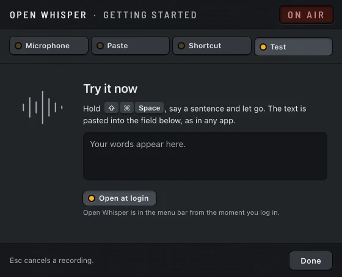
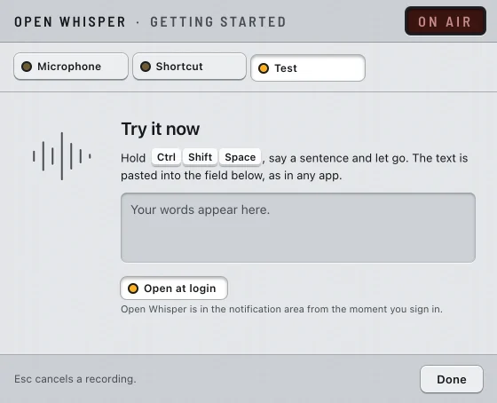
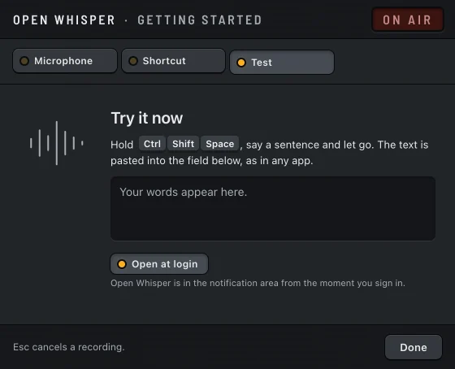
If you close it before Done
Esc, ⌘. or ⌘W close the window (CtrlW on Windows). What you already chose stays saved: the permissions, the shortcut and the mode. Setup is not marked complete, though, so the window opens again the next time Open Whisper starts. On the Mac, after the app reopens, it goes to the first step still missing.
Everything the setup sets can also be changed later: the shortcut, the mode and Open at login in Settings, the permissions in the system's settings.
Where the icon lives
Open Whisper has no main window. After setup, it lives in an icon, and its menu is how you reach everything else: see The icon and its menu.
Mac
The icon is in the menu bar, at the top right, near the clock. There is no icon in the Dock.
Windows
The icon is in the notification area, next to the clock. Windows 11 often hides new icons behind ^: if you do not see it, click ^ and drag the Open Whisper icon onto the taskbar, so you can see when it is recording.